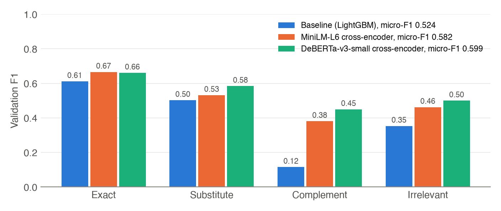
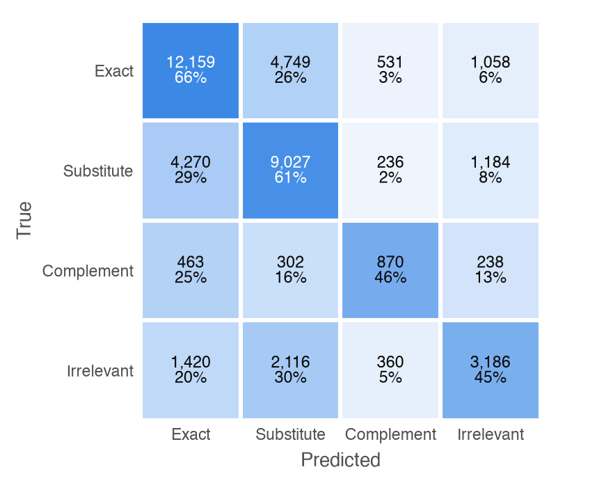

CMPS261, Fall 2026–27, Project Option 4.2
We chose option 4.2 from the course project list and did not change the problem. Given a shopping query and a product, the goal is to predict one of four labels: Exact, Substitute, Complement or Irrelevant (ESCI). We use the US locale of the reduced dataset (small_version = 1), which is harder and more balanced than the full set. All results in this report are on our validation split. We have not used the test split yet.
Our subset has 601,354 query–product pairs over 482,105 products. There are no duplicate pairs and every pair has its product. The official test split (181,701 pairs, 8,956 queries) is held out. For validation we took 10% of the training queries (seed 42) and grouped by query so that the same query never appears in two splits. This leaves 377,484 training pairs from 18,800 queries and 42,169 validation pairs from 2,088 queries. The training labels are E 43.3%, S 35.2%, I 17.0% and C 4.6%.
For cleaning, we unescape HTML, remove tags, normalize whitespace and lowercase the text. Bullets and descriptions are cut to 1,000 characters. Many product fields are missing (description 47.8%, color 32.2%, bullets 13.2%, brand 5.6%, title 0%), so we leave missing text empty and use field presence as a feature. Queries have 4.0 words on average and titles have 17.1.
For the classical models we built 33 lexical features: field overlap (plain and IDF-weighted), word and character-trigram similarity, BM25 for each field, number matching, brand, negation and accessory cues, lengths and field presence. The linear model also gets 1,045,120 sparse TF-IDF columns. IDF values and vectorizers are fit on the training data only.
Our main metric is micro-F1, which is the classification metric reported with the ESCI dataset and is the same as accuracy when each pair has one label. Published Task 2 scores use the larger dataset, so our numbers cannot be compared to them directly. We also report macro-F1 and per-class F1 because Complement is only 4.6% of the pairs, and micro-F1 alone would not show a model that almost never predicts it.
We tuned LightGBM on the 33 features with 8 settings (leaves in {31, 127}, min child samples in {50, 200}, class weights none or balanced, learning rate 0.05, early stopping at 50 rounds). We also tuned logistic regression on TF-IDF plus the scaled features with 8 settings (C in {0.1, 0.3, 1, 3}, class weights none or balanced). The best baseline by validation micro-F1 is LightGBM with 127 leaves, min child samples 200, no class weights and 99 trees. Its most important features by gain are character-trigram query coverage, any-field word overlap, mean query IDF, highest IDF among missing query words, accessory words in the title.
Class weighting lowers micro-F1 but raises macro-F1: the best balanced LightGBM gets 0.496 micro and 0.421 macro. One problem is that all 8 logistic regression fits reached the 300-iteration limit without converging, so its scores should be seen as a lower bound. Early stopping also used the validation split.
| Validation F1 | Micro | Macro | E | S | C | I |
|---|---|---|---|---|---|---|
| Majority (always E) | 0.439 | 0.152 | 0.610 | 0.000 | 0.000 | 0.000 |
| LR, best micro (C=0.1) | 0.519 | 0.383 | 0.609 | 0.494 | 0.095 | 0.332 |
| LightGBM (selected baseline) | 0.524 | 0.396 | 0.612 | 0.502 | 0.115 | 0.353 |
| MiniLM-L6 cross-encoder (step 4000) | 0.582 | 0.510 | 0.666 | 0.532 | 0.381 | 0.462 |
| DeBERTa-v3-small cross-encoder (step 15730) | 0.599 | 0.548 | 0.661 | 0.584 | 0.450 | 0.500 |
For the sophisticated model we fine-tune pretrained cross-encoders with a new 4-class head. Text A is the query and text B is title [SEP] brand color [SEP] first 300 characters of bullets, with a max length of 128. We train for 2 epochs using cross-entropy, AdamW and 5% warmup, and we evaluate on validation every 2,000 steps. We expected this to beat the baseline because a cross-encoder reads the query and the product together, so it can pick up synonyms, paraphrases and compatibility phrases like “case for iPhone 14”, which overlap counts cannot do.
So far both models beat the baseline. DeBERTa-v3-small (142M parameters, learning rate 2e-5) gets micro-F1 0.599 and macro-F1 0.548, which is 7.4 and 15.3 points above LightGBM. The biggest gain is on Complements, where F1 goes from 0.115 to 0.450. MiniLM-L6 (23M parameters) gets 0.582 micro and 0.510 macro. Training took 12 minutes for MiniLM and 54 minutes for DeBERTa on one NVIDIA L4 GPU, with the CPU baseline jobs running on the same machine. These are single-seed runs and the checkpoints were picked on validation, so the scores are slightly optimistic. The test split will give the final estimate.
Early failure observations. The table shows accuracy on specific groups of validation pairs. We fixed the thresholds before looking at the results.
| Slice | Pairs | Share | LightGBM | MiniLM | DeBERTa |
|---|---|---|---|---|---|
| All validation pairs | 42,169 | 100.0% | 0.524 | 0.582 | 0.599 |
| High title overlap (≥0.75), labelled I or C | 1,076 | 2.5% | 0.090 | 0.276 | 0.409 |
| Low title overlap (≤0.25), labelled E | 4,587 | 10.9% | 0.489 | 0.644 | 0.528 |
| Query with a likely misspelling | 3,986 | 9.4% | 0.501 | 0.525 | 0.537 |
| Query contains a number | 9,037 | 21.4% | 0.547 | 0.611 | 0.636 |
| Query contains a negation word | 5,201 | 12.3% | 0.501 | 0.577 | 0.606 |
Plan until 20 Nov.
Risks. The main risks are GPU time for the larger models and ablations, the rare Complement class, noise in the Exact/Substitute labels (which may limit the F1 we can reach), reusing the validation set during tuning, and the schedule, since this report is already late.

Figure 1: Per-class validation F1 for the selected baseline and both cross-encoders.

Figure 2: Validation confusion matrix of the best model (DeBERTa-v3-small). Each cell shows the pair count and the share of its true class.